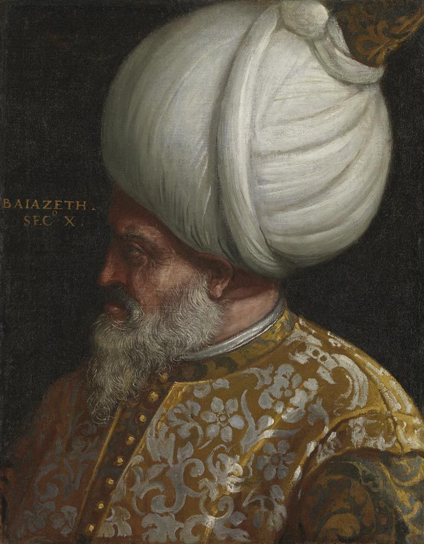

| önceki |  |
sonraki |
II. Bayezid veya bilinen unvanıyla Bayezid-i Velî (Osmanlıca: بايزيد ثانی; d. 3 Aralık 1447, Dimetoka – ö. 26 Mayıs 1512, Havsa), Osmanlı İmparatorluğu'nun sekizinci padişahıdır. Fatih Sultan Mehmed'in büyük oğlu ve Yavuz Sultan Selim'in babasıdır. 31 yıl süren saltanatı, kardeşi Cem Sultan'ın trajik gurbet ve esaret macerası, 1492'de Endülüs'ten sürülen yüz binlerce Yahudi ve Müslümanın kurtarılması, tarihe "Küçük Kıyamet" olarak geçen 1509 Büyük İstanbul Depremi ve Şahkulu İsyanı ile şekillenmiştir. Dindarlığı, adaleti, hat sanatındaki ustalığı ve Edirne'de müzikle tedavi uygulanan ünlü şifahanesi sebebiyle "Sultân-ı Velî" veya "Adlî" olarak anılmıştır.
Şehzadelik Yılları ve Amasya İlim Meclisleri
3 Aralık 1447 tarihinde Dimetoka Sarayı'nda doğdu. Babası Fatih Sultan Mehmed, annesi Emine Gülbahar Hatun'dur. Henüz yedi yaşındayken Amasya Sancakbeyliği'ne tayin edildi ve tam 27 yıl boyunca bu kadim kültür şehrini idare etti. Amasya'da kurduğu ilim meclislerinde devrin en büyük bilginlerini, şairlerini ve ediplerini topladı. Türk hat sanatının piri kabul edilen Şeyh Hamdullah'tan hat dersleri aldı ve icazet kazandı. Şeyh Hamdullah yazı yazarken divitteki mürekkebi bizzat sultanca tutulacak kadar üstada hürmet gösterdi.
Tahta Çıkışı ve Cem Sultan Hadisesi (1481 – 1495)
3 Mayıs 1481'de Fatih Sultan Mehmed'in vefatı üzerine Sadrazam Karamanî Mehmed Paşa, Konya Sancakbeyi olan şehzade Cem Sultan'ı tahta geçirmek istedi; ancak İshak Paşa komutasındaki yeniçeriler ayaklanarak Karamanî Paşa'yı katletti ve Amasya'dan davet edilen II. Bayezid 21 Mayıs 1481'de İstanbul'a gelerek tahta çıktı.
Ağabeyinin cülusunu tanımayan Cem Sultan, topladığı ordusuyla Bursa'ya girerek adına sikke kestirdi ve hutbe okuttu. Osmanlı ülkesini "Rumeli senin, Anadolu benim olsun" diyerek ikiye bölmeyi teklif etti. II. Bayezid bu teklifi devletin bölünmezliği ilkesi gereğince kesin olarak reddetti. 20 Haziran 1481'de Yenişehir Ovası'nda cereyan eden muharebede Cem Sultan yenilerek Memlük Devleti'ne sığındı.
Cem Sultan'ın 1482'de tekrar Anadolu'ya geçip netice alamayınca Rodos Şövalyeleri'ne sığınmasıyla mesele uluslararası dev bir krize dönüştü. Şövalyeler Cem'i Fransa'ya, ardından Roma'da Papalık sarayına teslim etti. Papa VIII. Innocentius ve VI. Alexander Borgia, Cem'i Osmanlı'ya karşı Haçlı seferi tehdidi olarak kullandı. II. Bayezid, kardeşinin Hristiyanların elinde bir Haçlı kozu olmaması için Papalık ve şövalyelere her yıl 45 bin duka altın tahsisat ödemek zorunda kaldı. Cem Sultan'ın 1495 yılında Napoli yakınlarında zehirlenerek vefat etmesi üzerine naaşı büyük tazminatlar ödenerek yurda getirildi ve Bursa Muradiye Külliyesi'ne defnedildi.
1492 Endülüs Sürgünü ve Kemal Reis'in Kurtarma Harekâtı
1492 yılında İspanya'da Beni Ahmer (Gırnata) Devleti'nin yıkılmasıyla Katolik Krallar Ferdinand ve İsabella, yüz binlerce Müslüman ve Sefarad Yahudisini engizisyon işkenceleriyle din değiştirmeye veya ülkeyi terk etmeye zorladı. Bu mazlum milletlerin imdat çağrısına sadece II. Bayezid cevap verdi:
Kaptan-ı Derya Kemal Reis komutasındaki Osmanlı donanması İspanya sahillerine sevk edildi. 150 binden fazla Sefarad Yahudisi ve Müslüman Endülüslü güvenle gemilere bindirilerek Osmanlı topraklarına getirildi; İstanbul, Selanik, İzmir ve Edirne'ye yerleştirildi. II. Bayezid, İspanya Kralı Ferdinand'ın bu akılsızlığını tarihe geçen şu sözüyle eleştirmiştir:
"Siz İspanya Kralı Ferdinand'a nasıl akıllı hükümdar dersiniz ki, kendi ülkesini fakirleştirip benim mülkümü zenginleştiriyor!"
Küçük Kıyamet: 1509 Büyük İstanbul Depremi
14 Eylül 1509 gecesi İstanbul, tarihinin en yıkıcı doğal afetlerinden birini yaşadı. 45 gün boyunca artçı sarsıntılarla devam eden ve tarihe "Kıyamet-i Suğrâ" (Küçük Kıyamet) olarak geçen depremde 1000'den fazla cami, mescit ve konak yerle bir oldu; 5 binden fazla insan hayatını kaybetti. Topkapı Sarayı'nın surları ve kubbesi çöktüğü için II. Bayezid günlerce bahçede çadırda kaldı, ardından Edirne'ye geçti. Padişah derhal seferberlik ilan ederek Anadolu ve Rumeli'den toplattığı 66 bin işçi ve mimarla İstanbul'u birkaç ay içinde baştan aşağı ahşap ve kâgir mimariyle yeniden inşa ettirdi.
Şahkulu İsyanı ve Oğlu Selim ile Mücadele
İran'da Safevî Devleti'ni kuran Şah İsmail'in Anadolu'daki Türkmenleri kışkırtması üzerine 1511'de Antalya Teke yöresinde Şahkulu Baba Tekeli İsyanı patlak verdi. İsyan Kütahya ve Sivas'a kadar yayıldı. Sadrazam Hadım Ali Paşa isyancılarla çarpışırken şehit düştü.
Babasının ihtiyarlığı ve pasif siyaseti sebebiyle devletin çöküşe sürüklendiğini gören Trabzon Valisi Şehzade Selim (Yavuz), Kefe üzerinden Rumeli'ye geçti. 1511 Karıştıran Muharebesi'nde durdurulduysa da, Şahkulu felaketi sonrası yeniçerilerin Selim'i ısrarla padişah istemesi üzerine II. Bayezid, 24 Nisan 1512'de tahttan oğlu Selim lehine feragat etmek zorunda kaldı.
Vefatı
Tahtı oğluna bıraktıktan sonra doğduğu yer olan Dimetoka'ya çekilmek üzere yola çıkan II. Bayezid, Edirne Havsa yakınlarındaki Abalar köyünde 26 Mayıs 1512'de 64 yaşında aniden vefat etti. Zehirlendiği yönünde kuvvetli tarihi rivayetler bulunmaktadır. Cenazesi İstanbul'a getirilerek kendi inşa ettirdiği Bayezid Camii haziresindeki türbesine defnedildi.
İmar Şaheseri: Edirne Şifahanesi
II. Bayezid, 1488 yılında Edirne'de Tunca Nehri kıyısında tıp tarihine geçen muazzam II. Bayezid Külliyesi ve Darüşşifası'nı kurmuştur. Avrupa'da akıl hastalarının içine şeytan girdi diye yakıldığı bir çağda, bu şifahanede hastalar su sesi, kuş sesleri, gül bahçeleri ve Türk musikisi makamlarıyla (Rast, Rehavi, Hicaz, Neva) ücretsiz tedavi edilmiştir. Bu şaheser günümüzde Avrupa Konseyi Müze Ödülü'ne layık görülmüştür. Ayrıca İstanbul Bayezid Meydanı'ndaki Bayezid Camii ve Amasya Külliyesi devrin mimari zirveleridir.
Ailesi
- Eşleri:
- Nigar Hâtûn (Şehzade Korkut'un annesi)
- Şirin Hâtûn (Şehzade Abdullah'ın annesi)
- Gülruh Hâtûn (Şehzade Alemşah'ın annesi)
- Bülbül Hâtûn (Şehzade Ahmed'in annesi)
- Hüsnüşah Hâtûn (Şehzade Şehinşah'ın annesi)
- Gülbahar Hâtûn (Ayşe Hatun, Yavuz Sultan Selim'in annesi)
- Ferahşad Hâtûn (Şehzade Mehmed'in annesi)
- Erkek çocukları:
- Şehzade Abdullah (1465 – 1483)
- Şehzade Ahmed (1466 – 1513, veliaht adayı)
- Şehzade Korkut (1467 – 1513, alim ve denizci şehzade)
- I. Selim (Yavuz Sultan Selim, 1470 – 1520)
- Şehzade Şehinşah (1474 – 1511)
- Şehzade Mahmud (1475 – 1507)
- Şehzade Alemşah (1477 – 1502)
- Şehzade Mehmed (1486 – 1504)
- Kız çocukları:
- Aynışah Sultân (Akkoyunlu şehzadesi Ahmed Göde ile evlendi)
- Ayşe Sultân (Güveyi Sinan Paşa ile evlendi)
- Hundi Sultân (Hersekzade Ahmed Paşa ile evlendi)
- Hatice Sultân
- Fatma Sultân
- Selçuk Sultân
II. Bayezid hakkında daha fazla bilgi için buraya tıklayın.